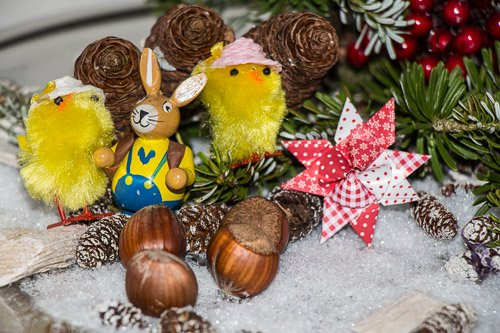
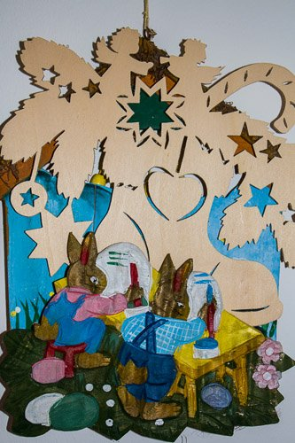
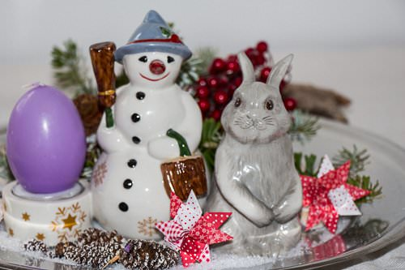
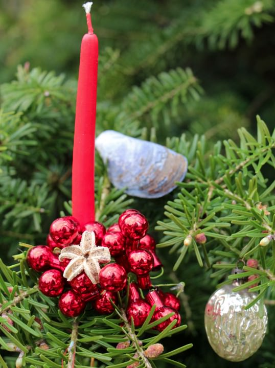

Vun Wiehnachtshaas un Oostermann
Dat is en feinen Summerdag. De Blomen blöht, dat Grass is bi to´n Wassen, de Welt löppt rund – allens is goot.
Blots een, de is nich tofreden: de Wiehnachtsmann. He maracht sik mit den Rasenmeiher af. „Gah mi af“, schimpt he, „wat bün ik froh, wenn wedder Winter is! An´n Noordpol mütt en wenigstens nich Rasen meihen!“ Summerferien sünd dat Gräsigste, wat dat geven deit!“ So schimpt de Wiehnachtsmann. He warrt dorbi so luut, dat de Oosterhaas blangenan dat mitkriggt. He hett ok Summerferien un sitt in en Liegestohl op de Terass un smökert in en Book mit Oostervertellen.
„Wenn du meenst, dat du grandessig sien muttst, denn wees dat wenigstens liesen, ik kann gar nich lesen, du ole Gnatterpott!“ De Oosterhaas is so füünsch över dat Geschimp vun den Wiehnachtsmann, dat em sien Brill al op de Nesenspitz rutschen deit. „Ach“, schimpt de Weihnachtsmann trüch, „du hest goot snacken! Du sittst komodig in dienen Stohl un leest en Book. Wenn dat op Oostern togeiht, denn maalst du en paar Eier an, birst över´t Land un lettst de dorbi eenfach fallen. Dat nennst du denn ok noch grootaardig versteken. VERSTEKEN! Dat ik nich lach! Dat beten Kleikraam to Oostern is doch nix! Bi mi süht dat wat anners ut. Bald geiht dat al wedder los, denn mutt ik wedder Dusende vun Breven lesen, denn mutt ik as dull oppassen, dat ik de velen Wünsch nich in ́n Tüdel krigg un wenn dat op Wiehnachten togeiht, stah ik dor mit all de Geschenke-Last, de ik verdelen schall. Ik dörf nienich wat verkehrt maken! Sünst gifft dat en Kind, wo dicke Tranen ut de Ogen kullern doot – un dat an´n Wiehnachten! Dat is dat Gräsigste, wat mi as Wiehnachtsmann malören kann! Vun so wat dröömst du nich mal, mien leve Oosterhaas! Un nu in´n Summer mutt ik sogaar noch Rasen meihen un du sittst fuul op´n Stohl. En Schietleven is dat doch!“
Den Oosterhaas staht de Lepels piel na baben. Wat hett he dor höört? Sien Job schall weniger weert sien un gar nix heten? De dore Wiehnachtsmann hett woll nich mehr all Eier in de Pann! De weet doch vun nix wat af!

„Du dusselige Ballerkopp!“, bölkt he. „Meenst du, blots du hest veel to doon? Wat is mit mi? Ik mutt so vele Eier anmalen, bet mi de Poten brennen doot, mutt de Oosterlämmer fodern un mi jeedeen Jahr nee överleggen, wo ik de Eier versteken will. Un mi helpt dorbi keeneen! För di packt de Wichtels de Geschenken in. De Engels, de backt den Stuten för di, du hest Renndeerter, de di nich blots de Geschenken to Steed fahren doot – nee, de nehmt di sogaar op den Sleden mit! Du bruukst di blots op dienen dicken Mors setten un goot is! Un ik? Ik mutt lopen! Man dat is lang nich allens! In´n Winter geiht dat al los: dor mutt ik mit de Höhner uthanneln, wat se mehr Eier leggen doot – sünst heff ik naher nich noog, wenn Oostern kummt. Hest du al mal mit en Hahn Överstünns uthannelt? Dat is gar nich so eenfach! Vun Jahr to Jahr fordert de mehr Stroh un Foder – un wokeen mutt dat allens levern? Ik! De Oosterhaas!

Wenn IK de Eier ALLEEN anmaalt heff, dörf IK se ALLEEN in mienen Korf packen un den ALLEEN op´n Buckel över ́t Land slepen! IK heff keen Help! Dor is dat doch mehr as recht, wenn ik nu mal in en Book smökern do un du den Rasen meihst!“ De Oosterhaas hett sik düchtig in´n Brass schafutert. Sien Stimm warrt luter un luter.
Dat lockt den Niklaus an. Still hett he den Striet vun den Oosterhaas un den Wiehnachtsmann mit anhöört.
De haalt ok al wedder deep Luft. He is bannig in de Brass un schimpt, dat he sien vele Arbeit ahn de Wichtels un Engels gar nich bemöten kann. De Wunschzeddels vun de Kinner warrt länger un länger. In en Korf op´n Rüch kann he de velen Geschenke nich ünnerbringen un drägen kann he se eerst recht nich. He överleggt sogaar, wat he sik nich en Hänger för sienen Sleden kopen schall. Man dat worr heten, dat he ok noch mehr Rennderter hebben mutt un dat geiht eenfach nich. Ok an´n Noordpol mutt se sparen. De Haas schall man froh ween, dat he man blots en beten mit de Eier rümkleien mutt.
De Niklaus kratzt sik an´n Kopp, as he dat allens hören deit. Wedder höört he den Wiehnachtsmann sien lute Stimm: “Dat mit dien Versteken is je ok nich so dull – jeedeen Kind kann dien Eier finnen!“ „Oh!“, roppt de Oosterhaas, „Ik warr di bald mal welk versteken! Man di Blindfisch kann ik de piel vör de Nees bummeln un du warrst se nich gewahr warrn! De Eier köönt di glatt in´n Mors bieten un du markst nix – oder du warrst dor sogaar noch roppedden, du mallige Eierpedder!“ Nu warrt de Nikolaus dat to bunt. „Höört op“!, roppt he. „Wenn de een vun den anneren meent, dat he meist nix to doon hett, denn tuuscht doch mal!“ „Du Oosterhaas maakst mal Wiehnachtsdeenst – un du Wiehnachtsmann kümmerst di üm Oostern.“
Rein verbaast kiekt de beiden den Niklaus an. Dat is vellicht mal´n Idee! So kummt dat, dat de Welt in dat Jahr en Wiehnachtshaas un en Oostermann hett.

Toeerst mutt de Wiehnachtshaas wiesen wat he kann. As dat so wiet is, maakt he sik op den Weg na den Noordpol. De Engels un Wichtels staunt nich slecht, as ehr Baas mit lange Lepels un Fell ut´n Summerurlaub kummt. Man ok de Jahren vörher is he jümmers wedder för Överraschungen goot ween un so nehmt se dat eenfach hen. Frisch geiht de Wiehnachtshaas to Wark. Toeerst geiht he in den Höhnerslag rin. De witten Noordpolhöhner sitt dor op de Stang, kakelt över dat Fest, wat dit Johr för de Döör steiht un wunnert sik över den Besöök. De töövt ok nich lang af, haalt deep Luft un roppt: „Leve Höhner, dit Johr warrt uns Wiehnachtfest mal anners! To Wiehnachten will ik keen runde Eier sehn. To Wiehnachten bimmelt de Glocken. Kort: Ik will vun jo Eier in Glockenform! Morgen will ik de eersten sehn. Haut rin!“
Dormit dreiht sik de Oostermann üm un ballert de Döör vun den Höhnerslag achter sik dicht. De Höhner kiekt sik mit verdreihte Ogen an. Wat se dor höört hebbt, kann woll nich wahr ween! So nich! In de Nacht willt se sik in den groten Höhnerrat beraden.
De Oostermann geiht trüch nah dat Wiehnachtshuus. Deep versackt he mit sien dünnen Been in´n Snee. „Brrrrrrr!“, maakt he. So koolt is dat an sien Oosterfest meist nich. Man he will nich schimpen, geiht na ́t Huus rin un sett sik an de velen Körv mit de Wunschzeddels ran. Mit grote Ogen fangt he an to lesen. De eerst Breev kummt vun Jan Heinsen ut Twietenhain. Jan hett dit Johr sunnerlig veel op sienen Zeddel. Dat kummt dorvun, dat sien Broder bi´n Spelen op sien fernstüertes Auto hüppt is. Dat is dorbi in ́n Dutt gahn un nu harr he dat geern nee. Un endlich will he en egen Computer hebben. Dat is em en reine Last, dat he jümmers sien Vadder fragen mutt. Babento bruukt he noch tominnst teihn Böker, en Rad, en Handy un Korten för de groten Footballspele vun dat tokamen Jahr. Sünst hett he nix op ́n Zeddel. „Jungedi, du leve Bimmelbahn!“, roppt de Oostermann. „Sünst hett de Jung keen Sorgen? Dat mit dat Rad is jo gar nich mal so dusselig. Door kann ik jo mit na em henfohren. De Computer kummt achtern op, de Böker pack ik mi in en Rucksack, dat Handy in de Büxendasch, de Korten för de Footballspele in de Jack un dat fernstüerte Auto krigg ik woll ok noch ünner. Blots – wat warrt mit all de anneren Kinner? De Körv loopt över vun de velen Breven. „Nützt jo nix“, murmelt he, dreiht sik üm un roppt: “Engels, dit Johr maakt wi dat mit Wiehnachten mal anners. Dat warrt mi hier to veel. Dit Johr gifft dat Koken in Form vun en Lamm, Glockeneier un en Rükelbuusch mit Tulpen un Hyazinthen. De Wichtels packt allens in Tüten un goot is! Fangt an mit backen! Ik överlegg mi al mal, wo ik de Saken versteken warr.“ De Engels un de Wichtels kiekt sik nadenkern an. Dat warrt doch keen Wiehnachten. Se steekt de Köpp tohoop un snackt af, wat se maken schüllt. Na en kort Tiet, treckt en vun de Wichtels sien dickste Jack an un sliekert sik ut dat Wiehnachtshuus ruut. Buten halt he sik en vun de Renndeerter ran un maakt sik op den Weg na dat Huus vun den Oostermann.

To´n Glück hebbt se goot Wedder un sünd ratzfatz dor. De Wichtel kiekt vun buten dörch dat Fenster. Wat he dor süht, lett em de Spucke wegblieven. Dor sitt de Oostermann un maalt Dannentwiegen op de Oostereier op. Annere hett he al trecht: Eier mit Biller vun sik sülvens, Eier, wo sien Engels op sünd, welk mit Peperkokenharten oder bunte Kugeln, Kringel un Lichter. He kennt sik jo nich so sunnerlig goot mit Oostern ut. Dat eenzige, wat sien Hart as dull to´n Kloppen bringt, sünd de Oosterglocken. Vun Glocken weet he wat af. Sünst is em allens frömd. Graad, as he deep doröver nadenken deit, dat de Eier doch nich twei gahn schüllt, wenn he se dörch den Schosteen in de Stuven smieten deit, kloppt dat an de Döör. Buten steiht de Wichtel un kiekt den Oostermann truschullig an:
„Äh, Oostermann? Bi uns an´n Noordpol is so en gediegenen Wiehnachtshaas an´t Rümramenten. Wenn dat so wieder geiht, kriggt Jan Heinsen ut Twietenhain al mal nix vun dat wat he sik to Wiehnachten wünschen deit. Un dat wat he kriggt, warrt he för bestimmt nich finnen, denn ik glööv nich, dat he op de Idee kummt, dat he sien Wiehnachtsgeschenken annerwegens as ünner´n Wiehnachtsboom söken mutt…!“
De Oostermann kratzt sik an´n Kopp. Dat geiht so nich. Dat markt he glieks. He gifft de Oosterglocken noch en beten frisch Water un maakt sik mit den Wichtel op´n Weg na´n Noordpol hen. Dor steiht den Wiehnachtshaas de Sweet op de Stirn. Graad hett he den Wunschzeddel vun Jana ut Bokenholm in de Hand. Se wünscht sik en Reis in en Fleger na Amerika. De Wiehnachtshaas is grad bi´n Utklamüstern, wo he en so groten Fleger herkriegen schall un woans un wodennig he den in den Gaarn vun ehr Öllern versteken kann. So´n Jumbojet in ́n Gaarn fallt doch op! As de Wiehnachtshaas den Oostermann dat vertellt hett, schüddelt de blot mit den Kopp. So mallig kann en sik doch gar nich anstellen. „Weetst du wat“?, seggt de Oostermann, „wi tuuscht wedder trüch! Warr du geern wedder Oosterhaas un ik seh to, dat ik as Wiehnachtsmann wedder dat Wiehnachtsfest in ́n Griff kriegen do.“
De Oostermann is nu wedder Oosterhaas – un dat is em bannig na de Mütz. Se seggt sik Tschüss un jeedeen maakt sik wedder an sien Opgaven. So kriggt de Kinner doch allens dat, wat se sik wünschen doot – ok ahn Fleger in ́n Gaarn.

Dat duert nich lang, dor sünd wedder Summerferien. Dat is en hitten Dag un de Wiehnachtsmann mutt wedder den Rasen meihen. Man dit Mal schimpt he nich. De eenmal vele Körv vull Oostereier anmalen müss, schimpt nich mehr över sien Arbeit un dat Leven an sik. Un ok de Oosterhaas gifft Roh. Mit Engels, Wichtels un Noordpolhöhner will he nix mehr to doon hebben. Veel to geern sitt he alleen in sien Huus un maalt de Eier an – mit bunte Blomen un Biller vun sik. De Eier vun den Wiehnachtsmann hett he gar nich bruken kunnt. Wenn he de doren Dinger mit opmalte Dannentwiegen to Oostern versteken harr, harrn de Kinner em utlacht.
Över ´n Tuun kiekt de beiden sik an un weet nipp un nau: jeedeen Opgaav hett dat in sik – un dat is jümmers goot, wenn een weet wo he henhöört.


{kind=link}
{kind=link}
{kind=link}
{kind=link}
Schreibe einen Kommentar